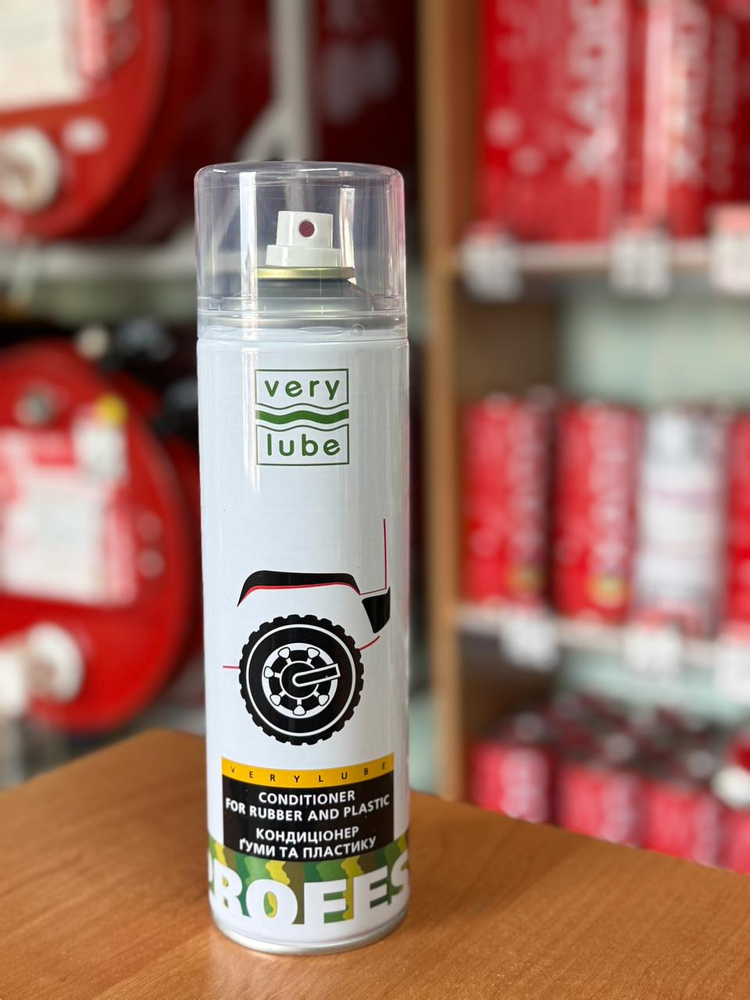

Об’єм: 500 мл
Спеціальний спрей-кондиціонер бренду VERYLUBE, створений для професійного догляду за пластиковими та гумовими елементами авто. Він ефективно повертає деталям їхній насичений заводський колір. Ідеально підходить для оновлення зовнішнього вигляду шин, нефарбованих бамперів, захисних молдингів, дзеркал, а також пластику в салоні (наприклад, приладової панелі). Після обробки поверхні виглядають свіжими, ніби автомобіль тільки-но виїхав з автосалону.
Якщо ви хочете дізнатись про наявність товару, отримати консультацію або поставити будь-які питання щодо продукції XADO — ми завжди готові допомогти.
Телефон для зв’язку: +38 (050) 585-07-26
Ми допоможемо обрати саме те, що потрібно вашому автомобілю.
Звертайтеся, ми цінуємо кожного клієнта!